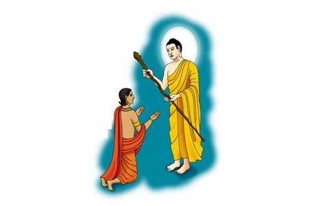

难陀，译为 “喜”。他是佛同父异母的亲弟弟，“仪容第一”。
佛陀的弟子当中，一共有三位难陀：阿难陀、放牛难陀、孙陀罗难陀，这里是孙陀罗难陀。孙陀罗是难陀的妻子，长得如花似玉，美艳不凡。难陀最爱他的妻子，因此人们把他妻子的名字和他的名字连在一起，称他为孙陀罗难陀。
仪容第一
大家都知道，佛诞生七天后，母亲就去世了，是净饭王第二夫人，也就是佛的姨母摩诃波阇波提夫人把他扶养长大的。摩诃波阇波提后来生了一个儿子，就是难陀。兄弟俩有许多相似的地方：生日只差一天，佛是四月八日诞生，他是四月九日出生。出生时全身黄金色，形貌与佛相仿佛。佛陀具有三十二相，难陀具有三十种相好，比佛矮了四指，常常被不认识的人误以为是佛陀。佛的诸大弟子中，难陀的相貌最英俊，最庄严，所以称他是“仪容第一”。
当时，摩竭陀国，有一位著名的，裸体外道的传教士，有许多徒众跟他学习，不但有学问，也非常有智慧，经常跟人辩论，每次辩论，都能辩胜，大家都称他为智者。有一次跟舍利弗辩论，结果输给了舍利弗，心想：“舍利弗是佛的弟子，就已经有这么高深的学问，佛陀一定更了不起。”仰慕佛法的奥妙，便也想出家。有一天，偶然遇见难陀尊者，觉得他容貌庄严，态度慈祥，深深地为他的仪态所吸引，并从内心发出赞叹道：“舍利弗尚且有那样高深的智慧，这位高大英俊的难陀尊者，一定更是伟大了！”于是，裸体外道怀著欢喜心，跟随难陀出家。
随佛出家
难陀夫妻感情很好，两人如胶似漆，行住坐卧不相舍离。有一天佛到王宫化缘，这个时候孙陀罗难陀夫妇正在一起吃饭，一看见佛来乞食，难陀就把佛的钵拿过来，装满了饭，当他要送饭给佛时，他的妻子说：“我现在吐一口痰在地上，在痰未干前，你必须回来，不然，我要罚你。”难陀说：“好的。”但在他要送饭给佛时，佛用神通往后退，难陀则往前走，一走就走到祇树给孤独园。佛即刻叫他落发，让他出家，他因放不下他的妻子，不愿出家，但是佛是他哥哥，他不敢反驳，就稀里糊涂完成了出家仪式。
伺机逃跑
难陀虽然出了家，可是还惦记着家里的妻子。他想：“今天我落发了，改天我就跑回去。”所以他一直在等机会，但今天等，明天等，等来等去都没机会，因为佛和阿罗汉都在祇树给孤独园，所以他很著急。有一天佛和阿罗汉们都到外面应供，只有难陀在家，他想：“今天我有机会了。”但是佛叫他扫地，他把垃圾扫在一起时，一阵风吹来，把垃圾又吹散了。所以他关上窗户，但这个窗户一关，那个窗户又开。像这样扫来扫去，关来关去，差不多过了二、三个钟头。他一看佛快回来了，就想：“不管佛有没有回来，我一定要跑。”他又想：“佛从不走小路，只走大路，所以我要从小路跑。”跑了一两里路，一看见佛从对面小路上走过来了，他就藏在一棵大树后面，要等佛过去了再走。谁知道他从这边走，佛就从那边来，如此反覆来回着。佛看到他就问：“你在这儿做什么？为什么不看门？”难陀想：“我不能说我要跑。”就说：“我左等右等，等您不回来，所以我到这里来接您，怕您拿不动钵。”佛说：“这个弟弟真是太好了。”因此佛又把他带回祇树给孤独园。
和猴子媲美
回到祇树给孤独园后，佛知道难陀仍不想出家，所以有一天佛就对他说：“难陀！你和我到一个山上去看看”难陀说“好呀！”心想：“这回上山，我可有机会逃跑了。”山上有很多猴子，大约有五、六百只之多。佛问难陀：“难陀！猴子和你的妻子比较，是你的妻子美丽？还是猴子美丽？”难陀一听到佛这么问，就回答说：“当然是孙陀罗美丽，佛您怎么可以把孙陀罗和猴子比呢？”佛说：“难陀！你很聪明，知道孙陀罗比猴子美丽。”
参观天宫
一天，佛又对难陀说：‘难陀！天上你没有去过，和我到天上去吧！”佛和难陀一起打坐，佛用神通把难陀带到天上去。到了天上，一看天上比人间不知美丽几千万倍，尤其是天人真是太美丽了。走到一个天宫有五百位天女，正在收拾地方，难陀一看这些天女，那简直是没见过的美丽，就生出爱心。他问一个天女：“这天宫怎么没有主人呢？”这天女说：“我们的主人还没来呢？他是佛的弟弟，现在跟著佛出家修道，等到下一生，他将生到天上来，我们五百位天女，都是给他做太太的。”难陀一听，想：‘我可要好好修道，不要回家了。”这时佛问他：“是天女美丽？还是孙陀罗美丽？”难陀说：“孙陀罗怎么可以和天女比？天女美丽到极点，再也没有比天女美丽了。天女和孙陀罗，就像猴子不能比孙陀罗，现在孙陀罗和天女比，孙陀罗就像猴子一样。”释迦牟尼佛说：“你要天女？还是要孙陀罗？”难陀说：“我当然要天女了，天女真是太美妙了！”释迦牟尼佛说：“将来你要生到这儿，你回去后，要好好修行了。”所以，这回难陀昼夜打坐用功精进。
游历地狱
于是难陀朝夕坐禅，一心想做天主。佛为了提醒他，让他明白自己的思想不对。所以佛将他带到地狱，去看刀山、剑树、火汤、寒冰等各种地狱。最后到一地狱，看到两个鬼在烧一锅油。油未烧沸，两个鬼很懒，一边工作，一边睡觉。油锅的火明明灭灭。难陀生起好奇心，觉得这两个鬼没有好好的工作，这样子锅中之油何时才会沸呢？于是就问这两个鬼：“喂！你们两位工作偷懒，没有好好地烧火，火都快灭了！你们究竟在此作什么呀？”两个鬼睁眼看了一下，才说：“你管它干什么？我们一点也不急。要等的人尚未来临，要等很久才会来呢！我们有的是时间！”难陀又问道：“你们在等谁呀？”两个小鬼说：“你想知道吗？我们可以告诉你，是释迦牟尼佛的弟弟难陀。他跟佛出家修道，却一心想享天福与五百天女。他将在天上过五百至一千年。以后他会忘了修道，又造很多业。当他的恶业满时，就会堕入地狱，受此油煎之罪。”难陀听得汗毛直竖，吓出一身冷汗。他想：“这苦怎么能忍受啊！”于是不再修生天，而决心要了却生死，不久即证得罗汉果位。此是难陀出家之经过。